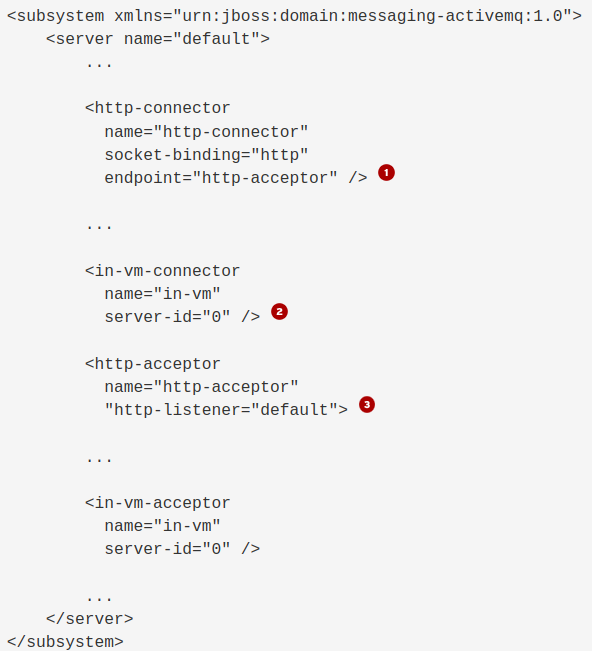
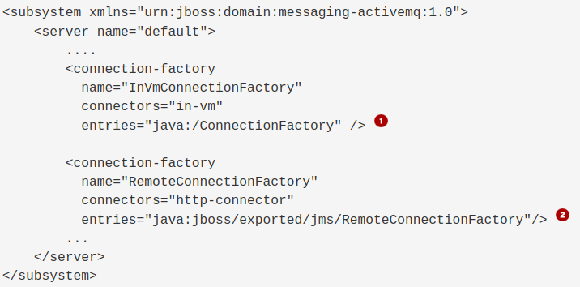
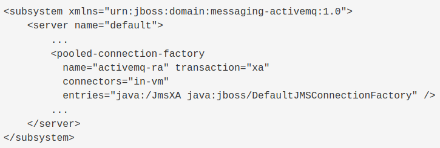
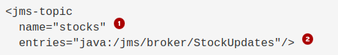

Configuring Messaging (JMS)
Messaging Concepts
-
Messaging provides a loosely-coupled communication mechanism for software components, enabling asynchronous processing.
-
For example, consider the checkout process for a web store that triggers the following actions:
-
Authorization and payment confirmation
-
Addition and removal of inventory
-
Delivery scheduling
-
-
These actions take time to process, so executing within a checkout request means users might have a long wait for order confirmation.
-
Hence they can be performed asynchronously.
-
Message-Oriented Middleware (MOM) manages message delivery and provides features like security and transactions.
-
The Java Message Service (JMS) provides a standardized API for MOM access, including ConnectionFactories, Queues, and Topics.
Overview of the Java Messaging Service (JMS):
-
JMS is a specification enabling Java components to exchange messages independently.
-
It offers a standardized API akin to JDBC for database access, reducing dependency on product nuances.
-
JMS includes:
-
Connection Factories: Facilitate MOM connections.
-
Queues: Support FIFO message retrieval, ideal for point-to-point communication.
-
Topics: Enable publish-subscribe communication, accommodating multiple subscribers; MOM retains messages for offline consumers.
-
-
Both queues and topics are referred to as destinations, accessible via JNDI names for seamless message redirection without altering application code.
-
JMS ConnectionFactories, referenced through JNDI names, enable dynamic MOM configuration for various environments, ensuring adaptability from development to production.
JMS Message Structure
-
JMS messages comprise:
-
Headers:
-
Managed by the MOM, these define message attributes, primarily handled internally.
-
Typically, application logic shouldn’t rely heavily on these headers.
-
-
Properties:
-
Producer-defined metadata facilitating communication between the MOM and consumers.
-
For instance, properties can direct messages to specific consumers, useful for scenarios like routing orders to different payment processing systems.
-
-
Bodies:
-
Contain application-specific data, distinct from MOM infrastructure handling.
-
Regular client applications handle message transformation, ensuring MOM focuses on message delivery.
-
-
JBoss EAP Built-in Messaging
-
The following are the current messaging offerings from Red Hat:
-
Red Hat AMQ: Broker and clients for a MOM system based on ActiveMQ, ActiveMQ Artemis, HornetQ, QPid, and other consolidated open source message components.
-
Red Hat AMQ Streams: MOM system based on Apache Kafka.
-
Red Hat AMQ
-
ActiveMQ is managed by using the management CLI and console.
-
Activating the messaging-activemq subsystem implies using either the standalone-full.xml or standalone-full-ha.xml configuration files for standalone server mode, or either the full or full-ha profiles for managed domains.
-
The subsystem contains two child objects in the default JBoss EAP 7 configuration, exemplified by the following CLI command:
[domain@127.0.0.1:9990 /] /profile=full/subsystem=messaging-activemq:read-resource { "outcome" => "success", "result" => { ...output omitted... "jms-bridge" => undefined, ...output omitted... "server" => {"default" => undefined}, ...output omitted... } }
Configuring Messaging Resources
ActiveMQ Connectors and Acceptors
-
JBoss EAP 8 includes an embedded ActiveMQ Artemis, referred to as ActiveMQ.
-
JBoss EAP configures network communication using:
-
Acceptors: Define protocols and parameters for incoming connections from messaging clients.
-
Connectors: Specify protocols and parameters for connecting to ActiveMQ servers.
-
ActiveMQ uses "connector" for client-side, differing from other JBoss EAP subsystems.
-
JBoss EAP 8 serves as both server and client for ActiveMQ, with default configuration files encompassing definitions for both.
-
ActiveMQ provides two types of acceptors and connectors:
-
HTTP variety: Employs the native ActiveMQ protocol via an HTTP connection, accepted by the undertow subsystem. This setup avoids the need for JBoss EAP to open extra firewall ports for remote messaging clients.
-
In-vm variety: Allows messaging clients within the same JVM as the ActiveMQ server to connect without network overhead.
-
-
ActiveMQ connector’s networking parameters are indirectly defined by referencing an acceptor element.
-
The connector connects to the IP address and TCP port accepted by the acceptor, aligning with ActiveMQ’s remote client discovery mechanism.
-
The following listing shows the connectors and acceptors in the default JBoss EAP configuration files:
-
The <http-connector> element called http-connector uses the endpoint attribute to reference the <http-acceptor> element called http-acceptor.
-
The <in-vm-connector> element does not need to reference any <in-vm-acceptor> element because local clients do not need discovery to find the messaging server.
-
The <http-acceptor> element references the http-listener called default, which is defined by the undertow subsystem.
-
JMS Connection Factories and Pooled-Connection Factories
-
Connection factory resources in the messaging-activemq subsystem refer to an ActiveMQ connector within the same subsystem.
-
Below is a snippet from the default JBoss EAP configuration files:
-
The <connection-factory> element named InVmConnectionFactory references the <in-vm-connector> element named in-vm, facilitating applications via the Java SE style JMS API within JBoss EAP. However, it’s not intended for use by enterprise components like servlets and EJBs.
-
The <connection-factory> element named RemoteConnectionFactory points to the <http-connector> element named http-connector, catering to remote JMS clients connecting to the embedded ActiveMQ.
-
-
Each <connection-factory> element, bound to distinct JNDI names via the entries attribute, corresponds to a different connector.
-
For Jakarta EE applications, it’s recommended to utilize a JMS PooledConnectionFactory instead of JMS ConnectionFactory resources. This PooledConnectionFactory offers connection reuse, XA transaction integration, and JAAS security context propagation.
-
Here’s a snippet from the default JBoss EAP configuration files featuring the pooled-connection-factory resource:
 -
In this example, Jakarta EE applications utilize the pooled connection factory when no connection factory is declared, with the pooled connection factory referencing the in-vm connector.
-
The following CLI command creates the resource from the previous listing under the full profile for a JBoss EAP managed domain:
[domain@localhost:9990 /] cd /profile=full/subsystem=messaging-activemq/​server=default [domain@localhost:9990 server=default] ./pooled-connection-factory=mycf:add(\ connectors=[in-vm], entries=[java:/jms/MyCF])
-
The reason to use a pooled connection factory instead of a regular connection factory is the same as using a JDBC datasource instead of a driver manager.
JMS Destinations
-
When employing JBoss EAP’s embedded Message-oriented Middleware (MOM), creating JMS destination resources simultaneously generates the underlying MOM objects.
-
To create a destination by using the CLI, create either a jms-queue or a jms-topic resource.
-
For example, the following command create a topic called stocks that is bound to the JNDI name java:/jms/broker/StockUpdates:
[domain@localhost:9990 server=default] ./jms-topic=stocks:add(entries=[java:/jms/broker/StockUpdates])
-
The previous command adds the following to the domain mode configuration files:
-
The name attribute is the name of the managed object. This name is only administrative, as it is not used by applications that use the JMS API.
-
The entries attribute provides one or more JNDI names for the resource. These are the names visible to applications.
-
Lab: Configuring Messaging Resources
Outcome: You should be able to create a JMS connection factory and a queue, and deploy sample applications that make use of them.
-
Download messaging subsystem with ActiveMQ Artemis using command shown below:
[vagrant@server ~]$ sudo wget -c /opt/messaging-activemq-subsystem.jar https://repo1.maven.org/maven2/org/wildfly/wildfly-messaging-activemq-subsystem/24.0.0.Final/wildfly-messaging-activemq-subsystem-24.0.0.Final.jar [vagrant@server ~]$ sudo mv /opt/wildfly-messaging-activemq-subsystem-24.0.0.Final.jar /opt/messaging-activemq.jar
-
Start a JBoss EAP 8 standalone server instance.
[vagrant@server ~]$ cd /opt/EAP-8.0.0/bin/ [vagrant@server bin]$ ./standalone.sh
-
Create the connection factory and queue by using the JNDI name expected by the applications.
-
Open a new terminal and run the management CLI script.
[vagrant@server ~]$ cd /opt/EAP-8.0.0/bin [vagrant@server bin]$ ./jboss-cli.sh -c
-
Add the messaging subsystem module using below command:
[standalone@localhost:9990 /] module add --name=messaging-activemq --resources=/opt/messaging-activemq.jar
-
Create a pooled-connection-factory that refers to the default in-vm ActiveMQ connector. Assign the JNDI name java:/jms/CustomCF to the factory.
[standalone@localhost:9990 /] cd /subsystem=messaging-activemq/server=default [standalone@localhost:9990 server=default] ./pooled-connection-factory=\ custom:add(connectors=[in-vm], entries=[java:/jms/CustomCF]) {"outcome" => "success"} -
Leave this terminal window open with the management CLI connected.
-
Create a queue called TestQueue with java:/jms/queue/TestQueue as an assigned JNDI name.
[standalone@localhost:9990 server=default]$ ./jms-queue=TestQueue:add\ (entries=["java:/jms/queue/TestQueue"]) {"outcome" => "success"} -
Observe that the new queue has not received any messages.
[standalone@localhost:9990 server=default] ./jms-queue=TestQueue\ :read-resource(include-runtime=true) { "outcome" => "success", "result" => { ...output omitted... "message-count" => 0L, "messages-added" => 0L, ...output omitted... } }
-
-
Deploy and use the test application to produce messages.
-
Use the management CLI to deploy the mdb-client.war application.
[standalone@localhost:9990 server=default]$ deploy \ /opt/mdb-client.war [standalone@localhost:9990 server=default]
-
In a new terminal window, send an HTTP request to the server to create a new JMS message.
[vagrant@server ~]$ curl --data "count=1" --data "label=first" \ --data "message=test message body" http://localhost:8080/mdb-client/queue ...output omitted...
-
In the terminal where the management CLI is connected, verify that the messages were queued by viewing the messages-added value. Additionally, the message-count indicates that there are two messages waiting in the queue.
[standalone@localhost:9990 server=default] ./jms-queue=TestQueue\ :read-resource(include-runtime=true) { "outcome" => "success", "result" => { ...output omitted... "message-count" => 1L, "messages-added" => 1L, ...output omitted... } } -
Inspect the headers and properties for messages published but not yet consumed.
-
Notice that the message’s Copy and Labels attributes match what came from the publisher test application.
-
The message body is not visible with the list-messages operation.
[standalone@localhost:9990 server=default] ./jms-queue=TestQueue:list-messages { "outcome" => "success", "result" => [{ ...output omitted... "address" => "jms.queue.TestQueue", ...output omitted... "Copy" => 1, "Label" => "first", ...output omitted... }] }
-
-
Deploy the message consumer test application and verify that it consumes the queued messages.
-
Use the management CLI to deploy the helloworld-mdb.jar application.
[standalone@localhost:9990 bin]$ deploy \ /opt/helloworld-mdb.jar
-
The consumer test application includes an MDB that immediately starts consuming and logging messages. In the terminal window running JBoss EAP, verify that the log entries are similar to the following:
...output omitted... ... INFO [class ...HelloWorldQueueMDB] ... Received Message from queue: test message body ... INFO [class ...HelloWorldQueueMDB] ... Message Properties: Copy #1 [first] ... INFO [class ...HelloWorldQueueMDB] ... Message Body: test message body
-
In the terminal where the management CLI is connected, verify that messages-added is still one, but message-count is back down to zero.
[standalone@localhost:9990 server=default] ./jms-queue=TestQueue\ :read-resource(include-runtime=true) { "outcome" => "success", "result" => { ...output omitted... "message-count" => 0L, "messages-added" => 1L, ...output omitted... } }
-
-
Publish a message and verify that the running consumer immediately reads it.
-
In the curl terminal window, send another HTTP request to the server.
[vagrant@server ~]$ curl --data "count=1" --data "label=second" \ --data "message=test message body" http://localhost:8080/mdb-client/queue ...output omitted...
-
In the terminal window running JBoss EAP, verify that the log entries are similar to the following:
...output omitted... ... INFO [class ...HelloWorldQueueMDB] ... Received Message from queue: test message body ... INFO [class ...HelloWorldQueueMDB] ... Message Properties: Copy #1 [second] ... INFO [class ...HelloWorldQueueMDB] ... Message Body: test message body
-
In the management CLI terminal window, verify that messages-added incremented and that message-count is still zero.
[standalone@localhost:9990 server=default] ./jms-queue=TestQueue\ :read-resource(include-runtime=true) { "outcome" => "success", "result" => { ...output omitted... "message-count" => 0L, "messages-added" => 2L, ...output omitted... } }
-
-
Shut down the server and close the management CLI connection.
-
In the management CLI terminal window, stop the JBoss EAP standalone server instance.
[standalone@localhost:9990 server=default] /:shutdown { "outcome" => "success", "result" => undefined } -
Exit the JBoss EAP management CLI client.
[standalone@localhost:9990 server=default]$ exit
-